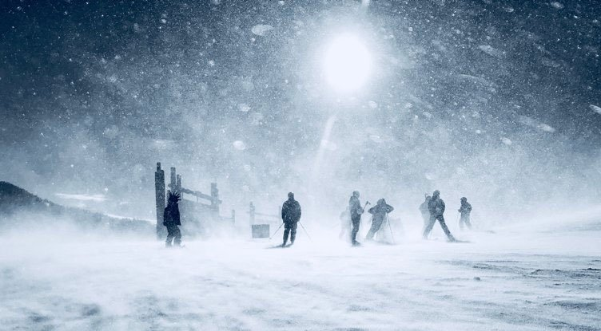
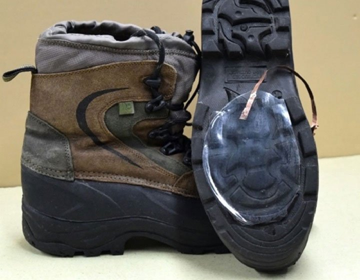

Thiết bị độc nhất vô nhị sản xuất điện từ... tuyết rơi
Quay về trang chủ
14:00 20/04/2019
Chuyên mục:
Công nghệ
Tags:
tuyết rơi

Mới đây, các nhà khoa học đã phát triển một thiết bị độc đáo tạo ra năng lượng từ chính hiện tượng tuyết rơi tự nhiên.
Dựa trên các nguyên tắc của hiệu ứng tĩnh điện ma sát (hiệu ứng mà trong đó điện tích được tạo ra sau khi hai vật chất tiếp xúc với nhau), sản phẩm công nghệ mới của các nhà nghiên cứu đã tận dụng các hạt tuyết mang điện tích dương để sản xuất điện..
Nhà hóa học Maher El-Kady từ Đại học California, Los Angeles (UCLA) và là giám đốc công nghệ của công ty nghiên cứu Nanotech Energy giải thích: "Do tuyết đã tích điện dương, nên chúng tôi nghĩ tại sao lại không thử tìm thêm một vật chất khác mang điện tích trái ngược rồi tách dòng điện ra để thu nguồn năng lượng?".
Theo ScienceAlert, mặc dù trước đây chưa có ai từng khai thác tuyết để thu nguồn điện, nhưng đã nhiều nhà nghiên cứu tiến hành hoạt động tương tự từ các vật chất khác.
Thiết bị của nhóm nghiên cứu là một máy phát điện nano điện ma sát chạy bằng tuyết - một loại vật chất dựa trên hiệu ứng điện ma sát và cảm ứng tĩnh điện để thu nguồn năng lượng.
Trong những năm gần đây, các nhà khoa học đã chế tạo nhiều loại máy phát điện nano điện ma sát hay còn gọi là TENG (triboelectric nanogenerator) sản xuất ra điện từ hạt mưa, chuyển động vật lý, ma sát lốp xe và thậm chí là cả di chuyển trên ván sàn.
Tất cả các phương pháp trên - bao gồm cả thiết bị TENG chạy bằng tuyết – có nguyên tắc hoạt động như nhau cho dù các phương pháp tiến hành có đôi chút khác biệt do phụ thuộc vào loại chuyển động và vật chất đang được khai thác.
Nhà hóa học và khoa học vật chất UCLA Richard Kaner cho biết: "Điện tĩnh xảy ra do sự tiếp xúc giữa vật chất thu hạt electron và vật chất từ bỏ hạt electron. Sau đó, bạn tách điện tích và nghiễm nhiên tạo ra nguồn điện."
Với TENG chạy bằng tuyết, sau khi thiết kế thiết bị và áp dụng in 3D để chế tạo điện cực, các nhà khoa học đã đo sản lượng điện với một vài vật chất mang điện ma sát khác nhau đóng vai trò là lớp chức năng và không phải vật chất nào cũng giúp sản xuất lượng điện như nhau.
El-Kady tiết lộ: "Trong khi tuyết có xu hướng từ bỏ các hạt electron, hiệu suất của thiết bị phụ thuộc vào tính hiệu quả của các vật chất khác khi tiến hành tách các điện tích này.
Sau khi thử nghiệm một số lượng lớn vật chất bao gồm lá nhôm và nhựa Teflon, chúng tôi phát hiện ra rằng silicone tạo ra nhiều điện tích hơn bất kỳ loại vật chất nào khác."
Với silicon được đặt làm lớp điện ma sát của thiết bị, điện tích có thể được tạo ra bởi một số cơ chế tiếp xúc khác nhau, bao gồm tuyết rơi trực tiếp hoặc trượt trên lớp silicon.
Ở các thử nghiệm khác, nhóm nghiên cứu còn kiểm tra lớp silicon tiếp xúc với tuyết trong khi gắn lớp silicon vào bánh xe đạp và cả bên dưới đế giày đi bộ đường dài.

Mặc dù lượng điện được tạo ra trong các thí nghiệm không lớn, nhưng các nhà nghiên cứu hứa hẹn TENG chạy bằng tuyết có khả năng được tích hợp vào pin năng lượng mặt trời trong tương lai, giúp pin tạo ra điện trong lúc trời tuyết khi hiệu quả thu được từ ánh nắng mặt trời bị giảm hoặc không khả thi.
Với diện tích bề mặt Trái đất khoảng 46 triệu km vuông tiếp xúc tuyết rơi mỗi năm, chúng ta có cơ hội lớn mở rộng quy mô công nghệ đến tầm chế tạo thiết bị thu năng lượng đeo tay, hoặc đưa TENG chạy bằng tuyết vào cảm biến theo dõi sinh học vào một ngày không xa.
Các nhà nghiên cứu cho biết nhiều khả năng trong tương lai gần, TENG chạy bằng tuyết có thể được sử dụng trong các trạm thời tiết từ xa tự cung cấp năng lượng được lắp đặt ở các khu vực dễ có tuyết, từ đó công nghệ có thể đo tốc độ tuyết rơi và độ sâu của tuyết với các chức năng khí tượng khác như đọc hướng gió và tốc độ gió.
Quay về trang chủ